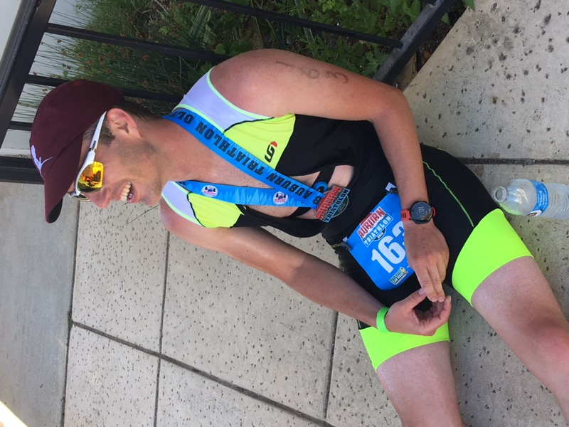
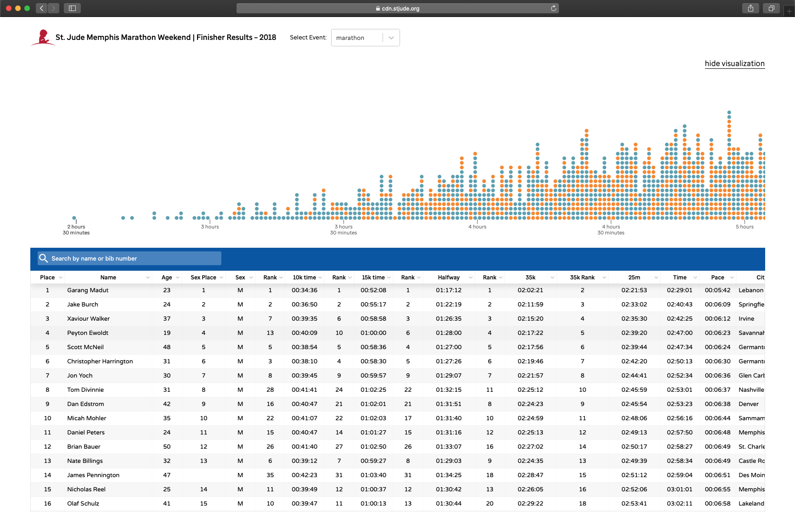

Trenton Kennedy

Trenton is a UI Engineer developing interfaces for non-profits at iDonate. His aim is to someday combine his knowledge of software with a passion for sports science. When he's not coding at a computer you can find him surviving a Crossfit workout or exploring new trails with his dog Marley. Below are a few of his projects and accomplishments.
Endurance Races
Since my first marathon in 2008 I have competed in over 15 races across 4 different states and counting. This is a small list of some of my notable endurance accomplishments to date.
- Finished the Dallas Whiterock Marathon at 17 years old with a time of 5hrs 4min.
- 3x OKC Marathon finisher with a personal best of 3hrs 32min.
- Finished the Austin Texas 2016 Half Ironman.
- 6x Olympic Triathlon finisher with a personal best of 2hrs 27min (2nd place).
- Served as a running pacer (miles 50-60) during the Leadville 100 trail run.
St. Jude Marathon Results
While working for St. Jude Children's Hospital I had the opportunity to be apart of some amazing projects. One of my most notable accomplishments was leading a team in improving the online marathon results experience. With roughly 6 weeks before race day we successfully designed, developed and launched the new experience.
Redkix

In 2016 I worked alongside Victor Erixon and the marketing team at Redkix to develop their entire digital marketing. This work included a custom website, email templates, and a brand style guide. Redkix has since been purchased by Facebook and converted into what is now known as Workplace.
Pearson Pulse

In 2018 I worked as a contractor to help rebrand Pearson Education's "Pulse Portal" for mobile and web. The most rewarding aspect of this project was supporting over 8 different languages within a single interface. The application is invite only based on school district but a preview can be found in the Android Marketplace.
Brands I've Worked With
Alltogether I have been fortunate enough to work with some amazing brands including: